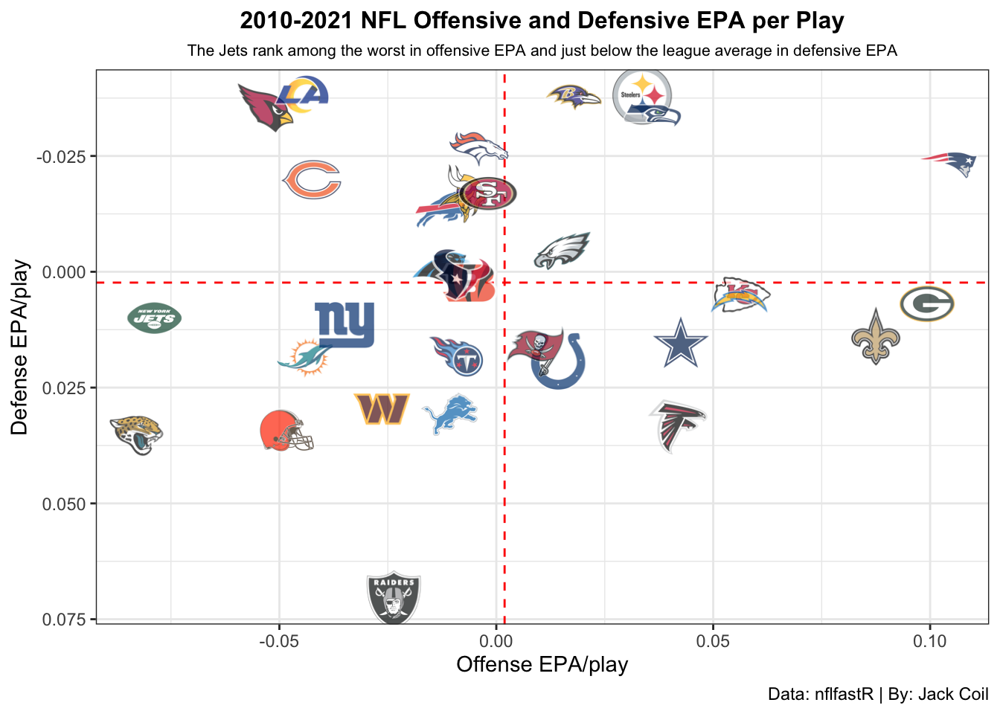
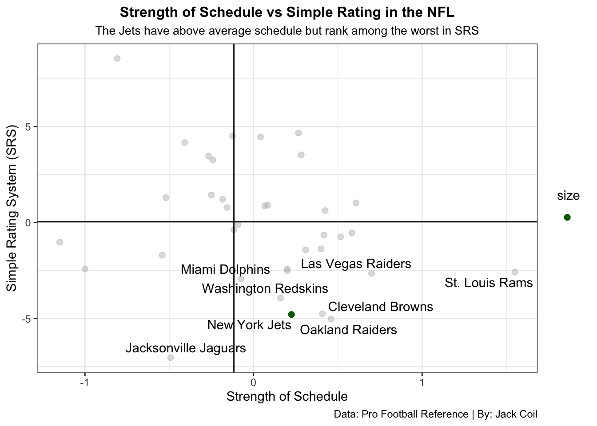

In just the past 10 years the New York Jets have become an average to below average football organization in the NFL with 1 Super Bowl win happening in 1969. Time has not been kind to the 2nd team from East Rutherford currently holding the longest playoff drought in the NFL right now at 11 seasons but could change soon enough with the young talent in New York. With many memories like the Butt Fumble of Mark Sanchez to Geno Smith getting his jaw broken by his own teammate or the many quarterbacks one day hoping to take them back to the days of Broadway Joe Namath or at least above .500. Today we will look to see if the Jets are not only a bottom tier team but if there is enough to show that they are the worst team since 2010.
Below we will start with comparing Offensive and Defensive EPA (expected points added) which is a measure of how well a team performs relative to expectation. You can use EPA in many aspects but is most commonly used to measure many aspects of team success and predict how match ups between teams will play out. On offense you would like a high EPA because you are trying to score while defense you would like a low EPA.
Code
library(tidyverse)library(nflreadr)library(nflplotR)library(ggrepel)pbp <-load_pbp(2010:2021) %>%filter(season_type =="REG") %>%#finding only for regular season games so no team stats are skewed due to playoff appearancesfilter(!is.na(posteam) & (rush ==1| pass ==1))offense <- pbp %>%group_by(team = posteam) %>%summarise(off_epa =mean(epa, na.rm =TRUE))defense <- pbp %>%group_by(team = defteam) %>%summarise(def_epa =mean(epa, na.rm =TRUE))offense %>%inner_join(defense, by ="team") %>%#inner join merges the data framesggplot(aes(x = off_epa, y = def_epa)) +#creating the chart using ggplot and adding x and y axis geom_mean_lines(aes(h_var = off_epa, v_var = def_epa)) +geom_nfl_logos(aes(team_abbr = team), width =0.07, alpha =0.7) +#adding nfl team logos instead of dotslabs(x ="Offense EPA/play",y ="Defense EPA/play",caption ="Data: nflfastR | By: Jack Coil",title ="2010-2021 NFL Offensive and Defensive EPA per Play",subtitle ="The Jets rank among the worst in offensive EPA and just below the league average in defensive EPA" ) +theme_bw() +theme(plot.title =element_text(size =12, hjust =0.5, face ="bold"),plot.subtitle =element_text(size =8, hjust =0.5) ) +scale_y_reverse()

Example from “the33rdteam.com”, Say the Chiefs start with the ball first-and-10 from their own 25-yard line, where its expected points would be about 1.06. If Patrick Mahomes throws a 15-yard completion, making it first-and-10 on the KC 40-yard line, where the expected points is now 1.88, the EPA of that play would be 1.88 – 1.06 or 0.82. In other words, that completion increased the Chiefs’ expected points on that drive by just over three-fourths of a point.
The Jets, again, rank among the worst in the NFL in Win Percentage but not enough to take over last.
Code
simple <- combined %>%group_by(Tm) %>%summarise(SRS =mean(SRS),SoS =mean(SoS),Wins =sum(W),Season =n() )jets <- simple %>%filter(Tm =="New York Jets")crap <- simple %>%filter(SRS <-2.5)ggplot() +geom_point(data=simple, aes(x=SoS, y=SRS, size=""),color ="grey",alpha=.5) +geom_point(data=jets, aes(x=SoS, y=SRS, size=""), color="darkgreen") +geom_vline(xintercept =-0.1164616) +geom_hline(yintercept =0.04100529) +geom_text_repel(data = crap, aes(x=SoS, y=SRS, label=Tm) ) +labs(x ="Strength of Schedule",y ="Simple Rating System (SRS)",caption ="Data: Pro Football Reference | By: Jack Coil",title ="Strength of Schedule vs Simple Rating in the NFL",subtitle ="The Jets have above average schedule but rank among the worst in SRS" ) +theme_bw() +theme(plot.title =element_text(size =12, hjust =0.5, face ="bold"),plot.subtitle =element_text(size =10, hjust =0.5) )

the Jets fall well below the Simple Rating with only two teams worse but have a stronger schedule than the league average.
The New York Jets have historically been bad as shown through the data it shows that they are not the worst team in the league but are consistently in the bottom 5 teams.